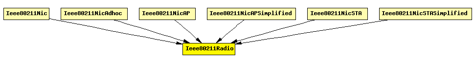

File: NetworkInterfaces/Radio/Ieee80211Radio.ned
C++ definition: click here
Physical layer for the IEEE 802.11 models. Its external interface (including gates and how it communicates with other modules) is the same as the Radio module's.
The implementation is largely based on the Mobility Framework's SnrEval80211 and Decider80211 modules.
See also: Radio
Author: Andras Varga
The following diagram shows usage relationships between modules, networks and channels. Unresolved module (and channel) types are missing from the diagram. Click here to see the full picture.
If a module type shows up more than once, that means it has been defined in more than one NED file.
| Ieee80211Nic | This NIC implements an 802.11 network interface card. It can be configured via the mgmtType parameter to act as an AP or a STA, or for ad-hoc mode. |
| Ieee80211NicAdhoc | This NIC implements an 802.11 network interface card in ad-hoc mode. |
| Ieee80211NicAP | This NIC implements an 802.11 network interface card, in an AP, using infrastructure mode. |
| Ieee80211NicAPSimplified | This NIC implements an infrastructure mode 802.11 network interface card for a wireless Access Point (AP), but using a simplified mgmt module that does not support handovers. |
| Ieee80211NicSTA | This NIC implements an 802.11 network interface card, in a STA, using infrastructure mode. |
| Ieee80211NicSTASimplified | This NIC implements an infrastructure mode 802.11 network interface card for a host (STA), but using a simplified mgmt module that does not support handovers. |
| Name | Type | Description |
|---|---|---|
| channelNumber | numeric const | channel identifier |
| transmitterPower | numeric const | power used for transmission of messages (in mW) |
| bitrate | numeric const | (in bits/s) |
| thermalNoise | numeric const | base noise level (dBm) |
| pathLossAlpha | numeric const | used by the path loss calculation |
| snirThreshold | numeric const | if signal-noise ratio is below this threshold, frame is considered noise (in dB) |
| sensitivity | numeric const | received signals with power below sensitivity are ignored |
| Name | Direction | Description |
|---|---|---|
| uppergateIn | input | from higher layer protocol (MAC) |
| uppergateOut | output | to decider (decider connects to higher layer protocol, i.e. the MAC) |
| radioIn | input | to receive frames (AirFrame) on the radio channel |
simple Ieee80211Radio parameters: channelNumber: numeric const, // channel identifier transmitterPower : numeric const, // power used for transmission of messages (in mW) bitrate: numeric const, // (in bits/s) thermalNoise: numeric const, // base noise level (dBm) pathLossAlpha: numeric const, // used by the path loss calculation snirThreshold: numeric const, // if signal-noise ratio is below this threshold, frame is considered noise (in dB) sensitivity: numeric const; // received signals with power below sensitivity are ignored gates: in: uppergateIn; // from higher layer protocol (MAC) out: uppergateOut; // to decider (decider connects to higher layer protocol, i.e. the MAC) in: radioIn; // to receive frames (AirFrame) on the radio channel endsimple